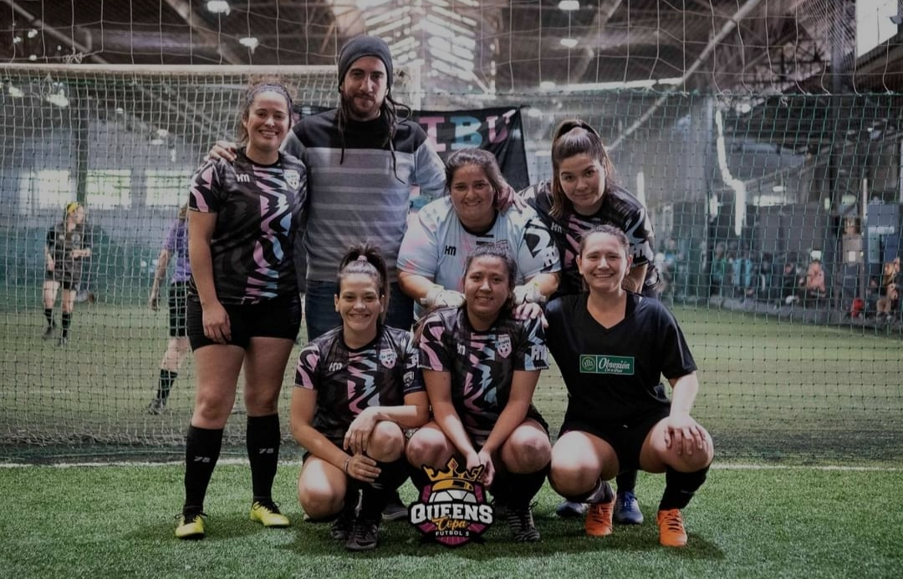

La Tribu surge en Agosto 2022, cuando los entrenamientos de Gambitas se
mudan a la Cancha F5 EuroGol. La buena química y las ganas de competir de algunas jugadoras
llevó a este equipo a presentarse en el Torneo CopaQueen. Muy pronto haremos una descripción de
las integrantes de este hermoso grupo.
